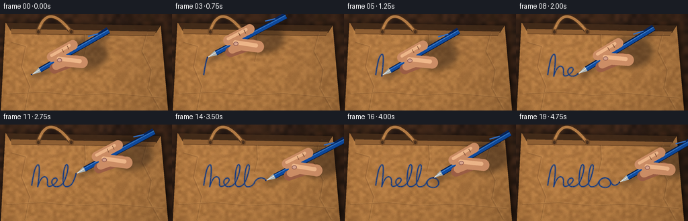
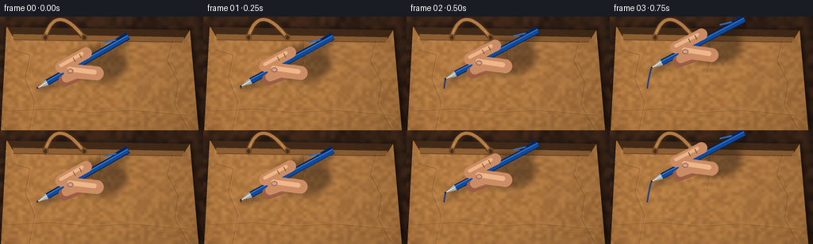

CODING AGENTS AS PIXEL WORLD MODELS
traex/GPT-5.6-Sol · mechanics_0045
点击播放 · 原生 RGB 像素
逐轮保存的候选
回放视频、检查图与代码变化。
每份候选均可单独播放。实际图片检查记录在下方工具轨迹中。
候选 01播放与检查图
点击播放 · 原生 RGB 像素


展开代码变化
--- 上一保存版本
+++ 本次保存版本
@@ -0,0 +1,261 @@
+from pathlib import Path
+import math
+import numpy as np
+from PIL import Image, ImageDraw, ImageFilter
+import artifact_io
+
+# Deterministic, entirely procedural macro illustration of handwriting on kraft paper.
+W, H, N = 256, 144, 20
+S = 4
+WS, HS = W*S, H*S
+rng = np.random.default_rng(4501)
+
+def sp(p):
+ return tuple(int(round(v*S)) for v in p)
+
+def poly(points):
+ return [sp(p) for p in points]
+
+def cubic(p0,p1,p2,p3,n=18):
+ t=np.linspace(0,1,n,endpoint=False)
+ omt=1-t
+ return np.stack([
+ omt**3*p0[i] + 3*omt**2*t*p1[i] + 3*omt*t**2*p2[i] + t**3*p3[i]
+ for i in range(2)],axis=1)
+
+def build_ink_path():
+ # One unbroken, loose cursive "hello". Keeping it unbroken makes the
+ # ballpoint-to-paper interaction physically continuous throughout the shot.
+ segs=[]
+ def add(a,b,c,d,n=18): segs.append(cubic(np.array(a),np.array(b),np.array(c),np.array(d),n))
+ add((47,91),(49,80),(51,63),(56,60),20) # h ascender
+ add((56,60),(60,58),(58,78),(56,93),20)
+ add((56,93),(59,81),(65,75),(69,79),18)
+ add((69,79),(73,84),(67,94),(75,92),16)
+ add((75,92),(79,91),(85,86),(85,82),12) # e loop
+ add((85,82),(84,77),(76,81),(77,87),15)
+ add((77,87),(79,95),(89,94),(94,87),18)
+ add((94,87),(99,79),(103,62),(100,60),18) # first l
+ add((100,60),(96,57),(93,76),(94,87),20)
+ add((94,87),(95,95),(103,94),(108,87),16)
+ add((108,87),(113,77),(117,61),(114,60),18) # second l
+ add((114,60),(110,58),(107,78),(108,88),20)
+ add((108,88),(109,95),(117,94),(122,88),16)
+ add((122,88),(125,78),(137,77),(140,84),18) # o
+ add((140,84),(143,91),(136,96),(128,93),18)
+ add((128,93),(121,90),(123,82),(129,80),17)
+ add((129,80),(136,77),(140,84),(143,89),16)
+ add((143,89),(147,92),(151,90),(154,86),14) # flourish
+ path=np.concatenate(segs+[np.array([[154.,86.]])],axis=0)
+ # Convert to uniformly spaced samples for steady pen velocity.
+ d=np.r_[0,np.cumsum(np.linalg.norm(np.diff(path,axis=0),axis=1))]
+ q=np.linspace(0,d[-1],550)
+ return np.stack([np.interp(q,d,path[:,0]),np.interp(q,d,path[:,1])],axis=1)
+
+INK_PATH=build_ink_path()
+
+# A static high-resolution base maintains natural texture consistency.
+def make_base():
+ # dark walnut table around the bag
+ yy,xx=np.mgrid[0:HS,0:WS]
+ low=np.array(Image.fromarray(rng.integers(0,256,(24,40),dtype=np.uint8)).resize((WS,HS),Image.Resampling.BICUBIC),dtype=float)
+ grain=rng.normal(0,2.2,(HS,WS))
+ wood=np.empty((HS,WS,3),dtype=np.float32)
+ bands=4*np.sin(xx/65.0)+2*np.sin(xx/17.0)
+ wood[:,:,0]=42+0.10*low+bands+grain
+ wood[:,:,1]=28+0.055*low+0.55*bands+grain*.6
+ wood[:,:,2]=20+0.030*low+grain*.35
+ base=Image.fromarray(np.uint8(np.clip(wood,0,255)),'RGB')
+ # Soft contact shadow under bag.
+ sh=Image.new('RGBA',(WS,HS),(0,0,0,0)); sd=ImageDraw.Draw(sh)
+ sd.polygon(poly([(8,14),(241,17),(255,143),(1,149)]),fill=(0,0,0,155))
+ sh=sh.filter(ImageFilter.GaussianBlur(4*S)); base=Image.alpha_composite(base.convert('RGBA'),sh)
+
+ # Bag silhouette and its rough, fibrous kraft texture.
+ mask=Image.new('L',(WS,HS)); md=ImageDraw.Draw(mask)
+ bagpoly=[(8,13),(239,17),(250,145),(1,147)]
+ md.polygon(poly(bagpoly),fill=255)
+ low2=np.array(Image.fromarray(rng.integers(0,256,(35,55),dtype=np.uint8)).resize((WS,HS),Image.Resampling.BICUBIC),dtype=float)
+ fine=rng.normal(0,5.8,(HS,WS))
+ # broad side shading and top-to-bottom kraft variation
+ edge=np.clip(np.minimum(xx/(23*S),(WS-xx)/(19*S)),0,1)
+ vertical=(yy/HS)*4
+ p=np.empty((HS,WS,4),dtype=np.uint8)
+ p[:,:,0]=np.clip(145 + .105*low2 + fine + 12*edge + vertical,0,255)
+ p[:,:,1]=np.clip(96 + .085*low2 + fine*.75 + 10*edge + vertical*.65,0,255)
+ p[:,:,2]=np.clip(50 + .055*low2 + fine*.42 + 7*edge,0,255)
+ p[:,:,3]=np.asarray(mask)
+ paper=Image.fromarray(p,'RGBA')
+ base=Image.alpha_composite(base,paper)
+
+ # Top opening and folded lip clearly identify the surface as a shopping bag.
+ details=Image.new('RGBA',(WS,HS),(0,0,0,0)); d=ImageDraw.Draw(details)
+ d.polygon(poly([(9,13),(239,17),(232,28),(16,25)]),fill=(55,35,21,235))
+ d.polygon(poly([(16,22),(232,26),(229,33),(17,30)]),fill=(137,91,49,255))
+ d.line(poly([(17,29),(229,32)]),fill=(81,51,27,190),width=1*S)
+ # back handle, tucked into opening; highlights mimic twisted kraft cord
+ handle_pts=[]
+ for t in np.linspace(0,1,80):
+ x=(1-t)**2*57+2*(1-t)*t*71+t*t*106
+ y=(1-t)**2*25+2*(1-t)*t*(-19)+t*t*27
+ handle_pts.append((x,y))
+ d.line(poly(handle_pts),fill=(65,42,24,210),width=7*S,joint='curve')
+ d.line(poly(handle_pts),fill=(174,119,66,255),width=4*S,joint='curve')
+ # Cord twist bands.
+ for k in range(6,75,8):
+ p0=handle_pts[k]; p1=handle_pts[min(k+3,79)]
+ d.line(poly([p0,p1]),fill=(210,156,96,180),width=1*S)
+ # Handle attachment patches.
+ for x in (57,106):
+ d.ellipse((int((x-4)*S),22*S,int((x+4)*S),31*S),fill=(106,68,36,220))
+ d.ellipse((int((x-2)*S),24*S,int((x+2)*S),29*S),fill=(54,35,22,220))
+ base=Image.alpha_composite(base,details)
+
+ # Fine paper fibers and compression creases, clipped to the bag mask.
+ fibers=Image.new('RGBA',(WS,HS),(0,0,0,0)); f=ImageDraw.Draw(fibers)
+ for _ in range(1250):
+ x=float(rng.uniform(5,247)); y=float(rng.uniform(20,145))
+ ln=float(rng.uniform(.3,2.5)); ang=float(rng.normal(0,.24))
+ col=(83,54,30,int(rng.integers(15,48))) if rng.random()<.58 else (239,197,135,int(rng.integers(12,37)))
+ f.line(poly([(x,y),(x+ln*math.cos(ang),y+ln*math.sin(ang))]),fill=col,width=max(1,int(rng.uniform(.25,.7)*S)))
+ # long crinkles with paired light and shade
+ creases=[[(17,42),(38,48),(32,79),(44,108),(37,143)],
+ [(218,30),(211,56),(225,84),(220,111),(237,142)],
+ [(9,119),(63,116),(113,121),(164,118),(242,125)],
+ [(126,31),(127,53),(123,71)]]
+ for pts in creases:
+ f.line(poly(pts),fill=(77,46,24,45),width=2*S,joint='curve')
+ off=[(x+1.1,y-.7) for x,y in pts]
+ f.line(poly(off),fill=(242,191,122,35),width=1*S,joint='curve')
+ fibers.putalpha(Image.composite(fibers.getchannel('A'),Image.new('L',(WS,HS),0),mask))
+ base=Image.alpha_composite(base,fibers)
+
+ # Subtle directional illumination from top left.
+ arr=np.array(base.convert('RGB')).astype(np.float32)
+ light=1.08-0.12*(xx/WS)-0.07*(yy/HS)
+ arr=np.clip(arr*light[:,:,None],0,255).astype(np.uint8)
+ return Image.fromarray(arr,'RGB').convert('RGBA')
+
+BASE=make_base()
+
+def capsule(draw,p1,p2,r,fill,outline=None,width=1):
+ p1=np.asarray(p1,float)*S; p2=np.asarray(p2,float)*S; r*=S
+ v=p2-p1; L=np.linalg.norm(v)
+ if L<1: return
+ n=np.array([-v[1],v[0]])/L*r
+ draw.polygon([tuple(p1+n),tuple(p2+n),tuple(p2-n),tuple(p1-n)],fill=fill)
+ draw.ellipse((int(p1[0]-r),int(p1[1]-r),int(p1[0]+r),int(p1[1]+r)),fill=fill)
+ draw.ellipse((int(p2[0]-r),int(p2[1]-r),int(p2[0]+r),int(p2[1]+r)),fill=fill)
+ if outline:
+ draw.line([tuple(p1),tuple(p2)],fill=outline,width=int(2*r+width*S))
+
+def draw_ink(img, upto):
+ # faint absorbed halo, then an uneven blue ballpoint core
+ pts=INK_PATH[:upto+1]
+ if len(pts)<2: pts=np.vstack([pts,pts+(.15,.15)])
+ layer=Image.new('RGBA',(WS,HS),(0,0,0,0)); d=ImageDraw.Draw(layer)
+ ip=poly(pts)
+ d.line(ip,fill=(23,71,142,80),width=3*S,joint='curve')
+ # core is narrow with slight repeated offset, lending ink-pressure variation
+ d.line(ip,fill=(12,53,129,240),width=max(4,int(1.35*S)),joint='curve')
+ # tiny skip highlights reveal rough paper tooth
+ for j in range(11,len(pts)-2,31):
+ if j<upto-2:
+ q=pts[j]
+ d.ellipse((int((q[0]-.35)*S),int((q[1]-.25)*S),int((q[0]+.35)*S),int((q[1]+.25)*S)),fill=(116,109,78,100))
+ return Image.alpha_composite(img,layer)
+
+def draw_hand_pen(img, tip, tangent, frame):
+ tip=np.array(tip,float)
+ # Pen points up and right; very small rocking follows writing direction.
+ rock=0.035*math.sin(frame*.65) + 0.018*np.clip(tangent[1],-1,1)
+ ang=-0.50+rock
+ a=np.array([math.cos(ang),math.sin(ang)])
+ n=np.array([-a[1],a[0]])
+
+ # Coherent cast shadow of the entire contact assembly.
+ shadow=Image.new('RGBA',(WS,HS),(0,0,0,0)); ds=ImageDraw.Draw(shadow)
+ rear=tip+a*128
+ ds.line([sp(tip+(3,4)),sp(rear+(3,4))],fill=(25,18,13,100),width=8*S)
+ palm=tip+a*79+n*3
+ ds.ellipse((int((palm[0]-31+4)*S),int((palm[1]-22+5)*S),int((palm[0]+39+4)*S),int((palm[1]+24+5)*S)),fill=(24,16,12,105))
+ shadow=shadow.filter(ImageFilter.GaussianBlur(4*S))
+ img=Image.alpha_composite(img,shadow)
+
+ hand=Image.new('RGBA',(WS,HS),(0,0,0,0)); d=ImageDraw.Draw(hand)
+ skin=(198,137,98,255); skin_dark=(151,91,66,255); skin_light=(231,177,133,255)
+ # Wrist enters from the upper-right, joined to a compact writing grip.
+ c=palm
+ wrist_inner=c+a*27-n*16; wrist_outer=c+a*33+n*21
+ far1=wrist_inner+a*92-n*5; far2=wrist_outer+a*92+n*4
+ d.polygon(poly([wrist_inner,far1,far2,wrist_outer]),fill=skin_dark)
+ d.ellipse((int((c[0]-34)*S),int((c[1]-22)*S),int((c[0]+39)*S),int((c[1]+24)*S)),fill=skin,outline=(125,75,57,255),width=1*S)
+ # warm edge shadow under palm
+ capsule(d,c-a*15+n*14,c+a*28+n*13,8,skin_dark)
+ # knuckle highlight
+ capsule(d,c-a*11-n*10,c+a*23-n*7,7,skin_light)
+
+ # Blue pen body laid through the grip.
+ pen=Image.new('RGBA',(WS,HS),(0,0,0,0)); pd=ImageDraw.Draw(pen)
+ pcone=tip+a*14; pend=tip+a*132
+ pd.line([sp(pcone),sp(pend)],fill=(4,27,66,255),width=8*S)
+ pd.line([sp(pcone+n*.2),sp(pend+n*.2)],fill=(14,73,155,255),width=6*S)
+ pd.line([sp(pcone-n*1.5),sp(pend-n*1.5)],fill=(65,139,221,220),width=1*S)
+ # rear plug and slim clip
+ pd.line([sp(tip+a*111-n*4),sp(tip+a*132-n*5)],fill=(8,39,100,255),width=2*S)
+ pd.line([sp(tip+a*116-n*4),sp(tip+a*101-n*8)],fill=(48,108,191,255),width=2*S)
+ # metal cone and dark ball at the exact written endpoint
+ pd.polygon(poly([tip,pcone+n*3.7,pcone-n*3.7]),fill=(163,171,172,255))
+ pd.line([sp(tip+a*1),sp(pcone-n*.8)],fill=(234,239,236,230),width=1*S)
+ pd.ellipse((int((tip[0]-.9)*S),int((tip[1]-.9)*S),int((tip[0]+.9)*S),int((tip[1]+.9)*S)),fill=(7,37,98,255))
+ img=Image.alpha_composite(img,pen)
+
+ # Fingers overlap the pen: index along top, thumb crossing it, middle below.
+ fingers=Image.new('RGBA',(WS,HS),(0,0,0,0)); fd=ImageDraw.Draw(fingers)
+ # index finger follows barrel toward the nib
+ capsule(fd,tip+a*39-n*8,tip+a*75-n*8,7.3,skin,outline=None)
+ capsule(fd,tip+a*40-n*10,tip+a*70-n*10,2.2,skin_light)
+ # middle finger under the barrel
+ capsule(fd,tip+a*34+n*9,tip+a*68+n*14,7.6,skin_dark)
+ capsule(fd,tip+a*38+n*7,tip+a*65+n*11,5.8,skin)
+ # thumb diagonally embraces barrel
+ capsule(fd,c-a*5+n*18,tip+a*47+n*2,8.8,skin)
+ capsule(fd,c-a*7+n*15,tip+a*47-n*.5,3.0,skin_light)
+ # thumbnail at thumb tip
+ nailc=tip+a*47+n*2
+ fd.ellipse((int((nailc[0]-4.0)*S),int((nailc[1]-3.0)*S),int((nailc[0]+3.5)*S),int((nailc[1]+3.0)*S)),fill=(225,165,135,235),outline=(156,95,76,230),width=S)
+ # Fine joint creases.
+ for off in (58,67):
+ q=tip+a*off-n*8
+ fd.line([sp(q+n*3),sp(q-n*3)],fill=(132,78,62,120),width=S)
+ img=Image.alpha_composite(img,fingers)
+ return img
+
+def render_frame(i):
+ # gentle ease at beginning and end, while still progressing every frame
+ u=i/(N-1)
+ prog=u*u*(3-2*u)
+ idx=int(round(prog*(len(INK_PATH)-1)))
+ idx=max(1,idx)
+ im=BASE.copy()
+ im=draw_ink(im,idx)
+ tip=INK_PATH[idx]
+ tangent=INK_PATH[min(idx+3,len(INK_PATH)-1)]-INK_PATH[max(0,idx-3)]
+ tangent=tangent/(np.linalg.norm(tangent)+1e-6)
+ im=draw_hand_pen(im,tip,tangent,i)
+ # Lens-like vignette focuses the contact point without hiding bag texture.
+ arr=np.array(im.convert('RGB')).astype(np.float32)
+ yy,xx=np.mgrid[0:HS,0:WS]
+ dx=(xx-WS*.50)/(WS*.72); dy=(yy-HS*.52)/(HS*.90)
+ vig=np.clip(1.035-.105*(dx*dx+dy*dy),.86,1.04)
+ arr=np.clip(arr*vig[:,:,None],0,255).astype(np.uint8)
+ out=Image.fromarray(arr).resize((W,H),Image.Resampling.LANCZOS)
+ return np.asarray(out,dtype=np.uint8)
+
+def main():
+ frames=np.stack([render_frame(i) for i in range(N)],axis=0)
+ artifact_io.save(frames,Path(__file__).resolve().parent)
+ print('saved',frames.shape,frames.dtype,'range',int(frames.min()),int(frames.max()))
+
+if __name__=='__main__':
+ main()
可观测工具轨迹
实际执行的命令与返回图片。
命令 1exit 0
/bin/bash -lc "cat prompt.txt && printf '\\n--- GENERATION_RULES.md ---\\n' && cat GENERATION_RULES.md && printf '\\n--- task_spec.json ---\\n' && cat task_spec.json"
命令 2exit 0
/bin/bash -lc "find . -maxdepth 3 -type f -printf '%p\\n' | sort && printf '\\n--- executables ---\\n' && command -v ffmpeg && command -v python3 && command -v blender || true"
命令 3exit 0
/bin/bash -lc 'cat artifact_io.py'
命令 4exit 0
/bin/bash -lc "python3 - <<'PY' mods=['numpy','PIL','imageio','cv2'] for m in mods: try: x=__import__(m); print(m,'OK',getattr(x,'__version__','')) except Exception as e: print(m,'NO',e) PY"
命令 5exit 0
/bin/bash -lc "find /usr/share/fonts /usr/local/share/fonts -type f \\( -iname '*.ttf' -o -iname '*.otf' \\) 2>/dev/null | head -80"
命令 6exit 0
/bin/bash -lc "cat > generate.py <<'PY'
from pathlib import Path
import math
import numpy as np
from PIL import Image, ImageDraw, ImageFilter
import artifact_io
# Deterministic, entirely procedural macro illustration of handwriting on kraft paper.
W, H, N = 256, 144, 20
S = 4
WS, HS = W*S, H*S
rng = np.random.default_rng(4501)
def sp(p):
return tuple(int(round(v*S)) for v in p)
def poly(points):
return [sp(p) for p in points]
def cubic(p0,p1,p2,p3,n=18):
t=np.linspace(0,1,n,endpoint=False)
omt=1-t
return np.stack([
omt**3*p0[i] + 3*omt**2*t*p1[i] + 3*omt*t**2*p2[i] + t**3*p3[i]
for i in range(2)],axis=1)
def build_ink_path():
# One unbroken, loose cursive \"hello\". Keeping it unbroken makes the
# ballpoint-to-paper interaction physically continuous throughout the shot.
segs=[]
def add(a,b,c,d,n=18): segs.append(cubic(np.array(a),np.array(b),np.array(c),np.array(d),n))
add((47,91),(49,80),(51,63),(56,60),20) # h ascender
add((56,60),(60,58),(58,78),(56,93),20)
add((56,93),(59,81),(65,75),(69,79),18)
add((69,79),(73,84),(67,94),(75,92),16)
add((75,92),(79,91),(85,86),(85,82),12) # e loop
add((85,82),(84,77),(76,81),(77,87),15)
add((77,87),(79,95),(89,94),(94,87),18)
add((94,87),(99,79),(103,62),(100,60),18) # first l
add((100,60),(96,57),(93,76),(94,87),20)
add((94,87),(95,95),(103,94),(108,87),16)
add((108,87),(113,77),(117,61),(114,60),18) # second l
add((114,60),(110,58),(107,78),(108,88),20)
add((108,88),(109,95),(117,94),(122,88),16)
add((122,88),(125,78),(137,77),(140,84),18) # o
add((140,84),(143,91),(136,96),(128,93),18)
add((128,93),(121,90),(123,82),(129,80),17)
add((129,80),(136,77),(140,84),(143,89),16)
add((143,89),(147,92),(151,90),(154,86),14) # flourish
path=np.concatenate(segs+[np.array([[154.,86.]])],axis=0)
# Convert to uniformly spaced samples for steady pen velocity.
d=np.r_[0,np.cumsum(np.linalg.norm(np.diff(path,axis=0),axis=1))]
q=np.linspace(0,d[-1],550)
return np.stack([np.interp(q,d,path[:,0]),np.interp(q,d,path[:,1])],axis=1)
INK_PATH=build_ink_path()
# A static high-resolution base maintains natural texture consistency.
def make_base():
# dark walnut table around the bag
yy,xx=np.mgrid[0:HS,0:WS]
low=np.array(Image.fromarray(rng.integers(0,256,(24,40),dtype=np.uint8)).resize((WS,HS),Image.Resampling.BICUBIC),dtype=float)
grain=rng.normal(0,2.2,(HS,WS))
wood=np.empty((HS,WS,3),dtype=np.float32)
bands=4*np.sin(xx/65.0)+2*np.sin(xx/17.0)
wood[:,:,0]=42+0.10*low+bands+grain
wood[:,:,1]=28+0.055*low+0.55*bands+grain*.6
wood[:,:,2]=20+0.030*low+grain*.35
base=Image.fromarray(np.uint8(np.clip(wood,0,255)),'RGB')
# Soft contact shadow under bag.
sh=Image.new('RGBA',(WS,HS),(0,0,0,0)); sd=ImageDraw.Draw(sh)
sd.polygon(poly([(8,14),(241,17),(255,143),(1,149)]),fill=(0,0,0,155))
sh=sh.filter(ImageFilter.GaussianBlur(4*S)); base=Image.alpha_composite(base.convert('RGBA'),sh)
# Bag silhouette and its rough, fibrous kraft texture.
mask=Image.new('L',(WS,HS)); md=ImageDraw.Draw(mask)
bagpoly=[(8,13),(239,17),(250,145),(1,147)]
md.polygon(poly(bagpoly),fill=255)
low2=np.array(Image.fromarray(rng.integers(0,256,(35,55),dtype=np.uint8)).resize((WS,HS),Image.Resampling.BICUBIC),dtype=float)
fine=rng.normal(0,5.8,(HS,WS))
# broad side shading and top-to-bottom kraft variation
edge=np.clip(np.minimum(xx/(23*S),(WS-xx)/(19*S)),0,1)
vertical=(yy/HS)*4
p=np.empty((HS,WS,4),dtype=np.uint8)
p[:,:,0]=np.clip(145 + .105*low2 + fine + 12*edge + vertical,0,255)
p[:,:,1]=np.clip(96 + .085*low2 + fine*.75 + 10*edge + vertical*.65,0,255)
p[:,:,2]=np.clip(50 + .055*low2 + fine*.42 + 7*edge,0,255)
p[:,:,3]=np.asarray(mask)
paper=Image.fromarray(p,'RGBA')
base=Image.alpha_composite(base,paper)
# Top opening and folded lip clearly identify the surface as a shopping bag.
details=Image.new('RGBA',(WS,HS),(0,0,0,0)); d=ImageDraw.Draw(details)
d.polygon(poly([(9,13),(239,17),(232,28),(16,25)]),fill=(55,35,21,235))
d.polygon(poly([(16,22),(232,26),(229,33),(17,30)]),fill=(137,91,49,255))
d.line(poly([(17,29),(229,32)]),fill=(81,51,27,190),width=1*S)
# back handle, tucked into opening; highlights mimic twisted kraft cord
handle_pts=[]
for t in np.linspace(0,1,80):
x=(1-t)**2*57+2*(1-t)*t*71+t*t*106
y=(1-t)**2*25+2*(1-t)*t*(-19)+t*t*27
handle_pts.append((x,y))
d.line(poly(handle_pts),fill=(65,42,24,210),width=7*S,joint='curve')
d.line(poly(handle_pts),fill=(174,119,66,255),width=4*S,joint='curve')
# Cord twist bands.
for k in range(6,75,8):
p0=handle_pts[k]; p1=handle_pts[min(k+3,79)]
d.line(poly([p0,p1]),fill=(210,156,96,180),width=1*S)
# Handle attachment patches.
for x in (57,106):
d.ellipse((int((x-4)*S),22*S,int((x+4)*S),31*S),fill=(106,68,36,220))
d.ellipse((int((x-2)*S),24*S,int((x+2)*S),29*S),fill=(54,35,22,220))
base=Image.alpha_composite(base,details)
# Fine paper fibers and compression creases, clipped to the bag mask.
fibers=Image.new('RGBA',(WS,HS),(0,0,0,0)); f=ImageDraw.Draw(fibers)
for _ in range(1250):
x=float(rng.uniform(5,247)); y=float(rng.uniform(20,145))
ln=float(rng.uniform(.3,2.5)); ang=float(rng.normal(0,.24))
col=(83,54,30,int(rng.integers(15,48))) if rng.random()<.58 else (239,197,135,int(rng.integers(12,37)))
f.line(poly([(x,y),(x+ln*math.cos(ang),y+ln*math.sin(ang))]),fill=col,width=max(1,int(rng.uniform(.25,.7)*S)))
# long crinkles with paired light and shade
creases=[[(17,42),(38,48),(32,79),(44,108),(37,143)],
[(218,30),(211,56),(225,84),(220,111),(237,142)],
[(9,119),(63,116),(113,121),(164,118),(242,125)],
[(126,31),(127,53),(123,71)]]
for pts in creases:
f.line(poly(pts),fill=(77,46,24,45),width=2*S,joint='curve')
off=[(x+1.1,y-.7) for x,y in pts]
f.line(poly(off),fill=(242,191,122,35),width=1*S,joint='curve')
fibers.putalpha(Image.composite(fibers.getchannel('A'),Image.new('L',(WS,HS),0),mask))
base=Image.alpha_composite(base,fibers)
# Subtle directional illumination from top left.
arr=np.array(base.convert('RGB')).astype(np.float32)
light=1.08-0.12*(xx/WS)-0.07*(yy/HS)
arr=np.clip(arr*light[:,:,None],0,255).astype(np.uint8)
return Image.fromarray(arr,'RGB').convert('RGBA')
BASE=make_base()
def capsule(draw,p1,p2,r,fill,outline=None,width=1):
p1=np.asarray(p1,float)*S; p2=np.asarray(p2,float)*S; r*=S
v=p2-p1; L=np.linalg.norm(v)
if L<1: return
n=np.array([-v[1],v[0]])/L*r
draw.polygon([tuple(p1+n),tuple(p2+n),tuple(p2-n),tuple(p1-n)],fill=fill)
draw.ellipse((int(p1[0]-r),int(p1[1]-r),int(p1[0]+r),int(p1[1]+r)),fill=fill)
draw.ellipse((int(p2[0]-r),int(p2[1]-r),int(p2[0]+r),int(p2[1]+r)),fill=fill)
if outline:
draw.line([tuple(p1),tuple(p2)],fill=outline,width=int(2*r+width*S))
def draw_ink(img, upto):
# faint absorbed halo, then an uneven blue ballpoint core
pts=INK_PATH[:upto+1]
if len(pts)<2: pts=np.vstack([pts,pts+(.15,.15)])
layer=Image.new('RGBA',(WS,HS),(0,0,0,0)); d=ImageDraw.Draw(layer)
ip=poly(pts)
d.line(ip,fill=(23,71,142,80),width=3*S,joint='curve')
# core is narrow with slight repeated offset, lending ink-pressure variation
d.line(ip,fill=(12,53,129,240),width=max(4,int(1.35*S)),joint='curve')
# tiny skip highlights reveal rough paper tooth
for j in range(11,len(pts)-2,31):
if j<upto-2:
q=pts[j]
d.ellipse((int((q[0]-.35)*S),int((q[1]-.25)*S),int((q[0]+.35)*S),int((q[1]+.25)*S)),fill=(116,109,78,100))
return Image.alpha_composite(img,layer)
def draw_hand_pen(img, tip, tangent, frame):
tip=np.array(tip,float)
# Pen points up and right; very small rocking follows writing direction.
rock=0.035*math.sin(frame*.65) + 0.018*np.clip(tangent[1],-1,1)
ang=-0.50+rock
a=np.array([math.cos(ang),math.sin(ang)])
n=np.array([-a[1],a[0]])
# Coherent cast shadow of the entire contact assembly.
shadow=Image.new('RGBA',(WS,HS),(0,0,0,0)); ds=ImageDraw.Draw(shadow)
rear=tip+a*128
ds.line([sp(tip+(3,4)),sp(rear+(3,4))],fill=(25,18,13,100),width=8*S)
palm=tip+a*79+n*3
ds.ellipse((int((palm[0]-31+4)*S),int((palm[1]-22+5)*S),int((palm[0]+39+4)*S),int((palm[1]+24+5)*S)),fill=(24,16,12,105))
shadow=shadow.filter(ImageFilter.GaussianBlur(4*S))
img=Image.alpha_composite(img,shadow)
hand=Image.new('RGBA',(WS,HS),(0,0,0,0)); d=ImageDraw.Draw(hand)
skin=(198,137,98,255); skin_dark=(151,91,66,255); skin_light=(231,177,133,255)
# Wrist enters from the upper-right, joined to a compact writing grip.
c=palm
wrist_inner=c+a*27-n*16; wrist_outer=c+a*33+n*21
far1=wrist_inner+a*92-n*5; far2=wrist_outer+a*92+n*4
d.polygon(poly([wrist_inner,far1,far2,wrist_outer]),fill=skin_dark)
d.ellipse((int((c[0]-34)*S),int((c[1]-22)*S),int((c[0]+39)*S),int((c[1]+24)*S)),fill=skin,outline=(125,75,57,255),width=1*S)
# warm edge shadow under palm
capsule(d,c-a*15+n*14,c+a*28+n*13,8,skin_dark)
# knuckle highlight
capsule(d,c-a*11-n*10,c+a*23-n*7,7,skin_light)
# Blue pen body laid through the grip.
pen=Image.new('RGBA',(WS,HS),(0,0,0,0)); pd=ImageDraw.Draw(pen)
pcone=tip+a*14; pend=tip+a*132
pd.line([sp(pcone),sp(pend)],fill=(4,27,66,255),width=8*S)
pd.line([sp(pcone+n*.2),sp(pend+n*.2)],fill=(14,73,155,255),width=6*S)
pd.line([sp(pcone-n*1.5),sp(pend-n*1.5)],fill=(65,139,221,220),width=1*S)
# rear plug and slim clip
pd.line([sp(tip+a*111-n*4),sp(tip+a*132-n*5)],fill=(8,39,100,255),width=2*S)
pd.line([sp(tip+a*116-n*4),sp(tip+a*101-n*8)],fill=(48,108,191,255),width=2*S)
# metal cone and dark ball at the exact written endpoint
pd.polygon(poly([tip,pcone+n*3.7,pcone-n*3.7]),fill=(163,171,172,255))
pd.line([sp(tip+a*1),sp(pcone-n*.8)],fill=(234,239,236,230),width=1*S)
pd.ellipse((int((tip[0]-.9)*S),int((tip[1]-.9)*S),int((tip[0]+.9)*S),int((tip[1]+.9)*S)),fill=(7,37,98,255))
img=Image.alpha_composite(img,pen)
# Fingers overlap the pen: index along top, thumb crossing it, middle below.
fingers=Image.new('RGBA',(WS,HS),(0,0,0,0)); fd=ImageDraw.Draw(fingers)
# index finger follows barrel toward the nib
capsule(fd,tip+a*39-n*8,tip+a*75-n*8,7.3,skin,outline=None)
capsule(fd,tip+a*40-n*10,tip+a*70-n*10,2.2,skin_light)
# middle finger under the barrel
capsule(fd,tip+a*34+n*9,tip+a*68+n*14,7.6,skin_dark)
capsule(fd,tip+a*38+n*7,tip+a*65+n*11,5.8,skin)
# thumb diagonally embraces barrel
capsule(fd,c-a*5+n*18,tip+a*47+n*2,8.8,skin)
capsule(fd,c-a*7+n*15,tip+a*47-n*.5,3.0,skin_light)
# thumbnail at thumb tip
nailc=tip+a*47+n*2
fd.ellipse((int((nailc[0]-4.0)*S),int((nailc[1]-3.0)*S),int((nailc[0]+3.5)*S),int((nailc[1]+3.0)*S)),fill=(225,165,135,235),outline=(156,95,76,230),width=S)
# Fine joint creases.
for off in (58,67):
q=tip+a*off-n*8
fd.line([sp(q+n*3),sp(q-n*3)],fill=(132,78,62,120),width=S)
img=Image.alpha_composite(img,fingers)
return img
def render_frame(i):
# gentle ease at beginning and end, while still progressing every frame
u=i/(N-1)
prog=u*u*(3-2*u)
idx=int(round(prog*(len(INK_PATH)-1)))
idx=max(1,idx)
im=BASE.copy()
im=draw_ink(im,idx)
tip=INK_PATH[idx]
tangent=INK_PATH[min(idx+3,len(INK_PATH)-1)]-INK_PATH[max(0,idx-3)]
tangent=tangent/(np.linalg.norm(tangent)+1e-6)
im=draw_hand_pen(im,tip,tangent,i)
# Lens-like vignette focuses the contact point without hiding bag texture.
arr=np.array(im.convert('RGB')).astype(np.float32)
yy,xx=np.mgrid[0:HS,0:WS]
dx=(xx-WS*.50)/(WS*.72); dy=(yy-HS*.52)/(HS*.90)
vig=np.clip(1.035-.105*(dx*dx+dy*dy),.86,1.04)
arr=np.clip(arr*vig[:,:,None],0,255).astype(np.uint8)
out=Image.fromarray(arr).resize((W,H),Image.Resampling.LANCZOS)
return np.asarray(out,dtype=np.uint8)
def main():
frames=np.stack([render_frame(i) for i in range(N)],axis=0)
artifact_io.save(frames,Path(__file__).resolve().parent)
print('saved',frames.shape,frames.dtype,'range',int(frames.min()),int(frames.max()))
if __name__=='__main__':
main()
PY
python3 generate.py"命令 7exit 0
/bin/bash -lc 'command -v chafa || command -v viu || command -v jp2 || true; file inspection.png pixels.npz index.html; du -sh .'
命令 8exit 0
/bin/bash -lc "python3 - <<'PY'
import numpy as np
from PIL import Image
from pathlib import Path
p=np.load('pixels.npz')['pixels']
assert p.shape==(144,256,20),p.shape
rgb=np.stack([(p>>16)&255,(p>>8)&255,p&255],axis=-1).astype(np.uint8).transpose(2,0,1,3)
print('shape/dtype',rgb.shape,rgb.dtype)
print('frame means',np.round(rgb.mean(axis=(1,2,3)),2).tolist())
print('changed pixels',[(rgb[i]"'!=rgb[i-1]).any(2).sum() for i in range(1,20)])
# blue-dominant pixel count, most meaningful around the writing/pen
blue=(rgb[:,:,:,2]>rgb[:,:,:,0]*1.28)&(rgb[:,:,:,2]>rgb[:,:,:,1]*1.15)&(rgb[:,:,:,2]>80)
print('"'blue counts',blue.sum((1,2)).tolist())
for f in ['index.html','inspection.png','transition_check.png','frames/00.png','frames/19.png']:
q=Path(f); print(f,q.stat().st_size)
for i in range(20):
im=Image.open(f'frames/{i:02d}.png')
assert im.mode=='RGB' and im.size==(256,144)
print('all frame files RGB 256x144: OK')
PY"保存候选 1 份；完成命令 8 次；可验证图片返回 0 张。原始 API 响应与完整日志保留在本地。